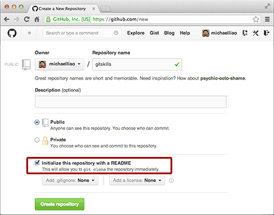
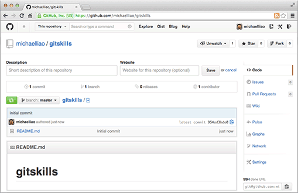

上次我们讲了先有本地库，后有远程库的时候，如何关联远程库。
现在，假设我们从零开发，那么最好的方式是先创建远程库，然后，从远程库克隆。
首先，登陆 GitHub，创建一个新的仓库，名字叫
gitskills
：

我们勾选
Initialize this repository with a README
，这样 GitHub 会自动为我们创建一个
README.md
文件。创建完毕后，可以看到
README.md
文件：

现在，远程库已经准备好了，下一步是用命令
git clone
克隆一个本地库：
$ git clone git@github.com:michaelliao/gitskills.git
Cloning into 'gitskills'...
remote: Counting objects: 3, done.
remote: Total 3 (delta 0), reused 0 (delta 0)
Receiving objects: 100% (3/3), done.
$ cd gitskills
$ ls
README.md
注意把 Git 库的地址换成你自己的，然后进入
gitskills
目录看看，已经有
README.md
文件了。
如果有多个人协作开发，那么每个人各自从远程克隆一份就可以了。
你也许还注意到，GitHub 给出的地址不止一个，还可以用
https://github.com/michaelliao/gitskills.git
这样的地址。实际上，Git 支持多种协议，默认的
git://
使用 ssh，但也可以使用
https
等其他协议。
使用
https
除了速度慢以外，还有个最大的麻烦是每次推送都必须输入口令，但是在某些只开放 http 端口的公司内部就无法使用
ssh
协议而只能用
https
。
要克隆一个仓库，首先必须知道仓库的地址，然后使用
git clone
命令克隆。
Git支持多种协议，包括
https
，但通过
ssh
支持的原生
git
协议速度最快。